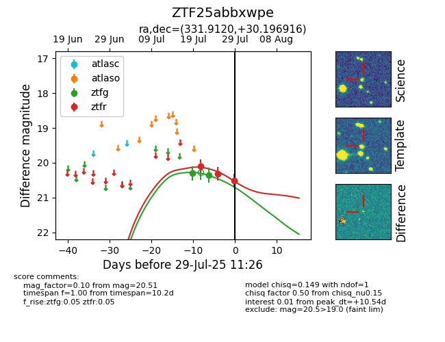

Target ZTF25abbxwpe at 2025-07-29 11:26, see:
FINK: fink-portal.org/ZTF25abbxwpe
Lasair: lasair-ztf.lsst.ac.uk/objects/ZTF25abbxwpe
ALeRCE: alerce.online/object/ZTF25abbxwpe
alt names
ZTF25abbxwpe (ztf,fink)
coordinates:
equatorial (ra, dec) = (331.9120,+30.19692)
galactic (l, b) = (85.6973,-20.58835)
photometry
last ztfg=20.36, ztfr=20.51
2 ztfg, 3 ztfr detections
